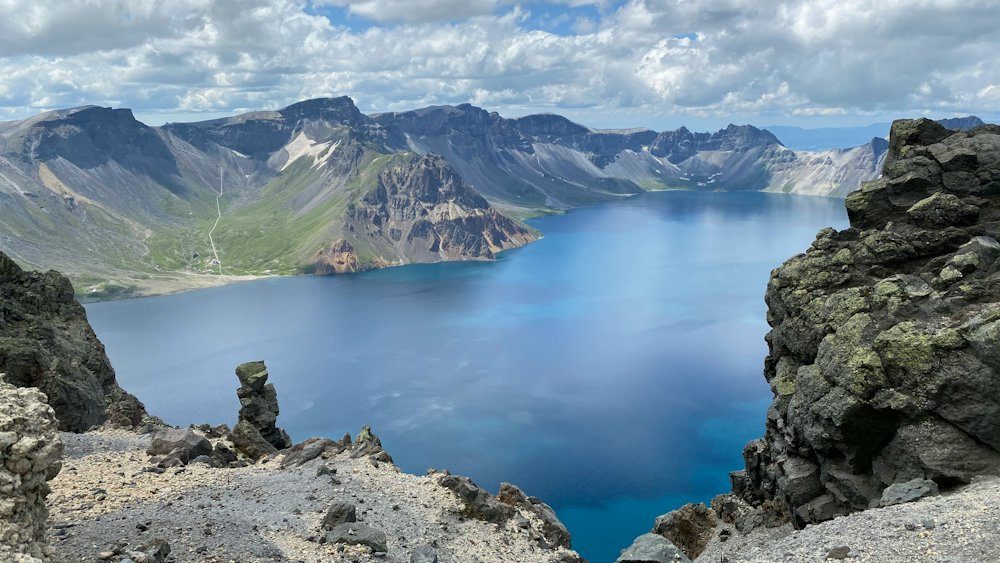

自然历年规律东北
长白山天池
Changbai Mountain Heaven Lake · 吉林 · 延边
最佳时间
7 – 9 月；夏季见天池概率最高
天池全年约三分之一时间可见，7–8 月云开概率最大；冬季有雾凇与冰雪。
中朝界湖火山口湖：16 座山峰环抱一池碧水，天气放晴时的天池蓝到失真。
不能错过
- 北坡主峰看天池最经典，配套最成熟
- 长白瀑布与聚龙温泉群煮鸡蛋是彩蛋
当地美食
人参鸡汤吉林参入炖盅，登山滋补
朝鲜族冷面冰酸甜汤配牛肉片，下山解乏
锅包肉东北菜甜酸脆壳代表作
温泉煮蛋聚龙温泉群亲手煮，溏心蛋
旅人提醒
- 天池天气瞬变，出发前查景区实况直播
- 主峰风大温度低，带防风外套
月度热力与气温
-12°
1
-8°
2
1°
3
12°
4
19°
5
23°
6
25°
7
24°
8
18°
9
10°
10
-2°
11
-10°
12
适宜度（柱高，5=最佳）依据活动窗口与气候整理；气温为月均高温近似值（°C），仅供规划参考，出行前请查当地预报。
编辑核实笔记 · 整理自长白山景区公开资料，非亲历；开放以景区公告为准。
预订 / 官网
官方页面：查看官网 / 官方信息 ↗ · 票价与预约以官网为准
联盟链接含占位 tracking id（Booking/Klook/Trip.com），上线替换为真实 ID 即生效；均带 utm 参数与点击统计。